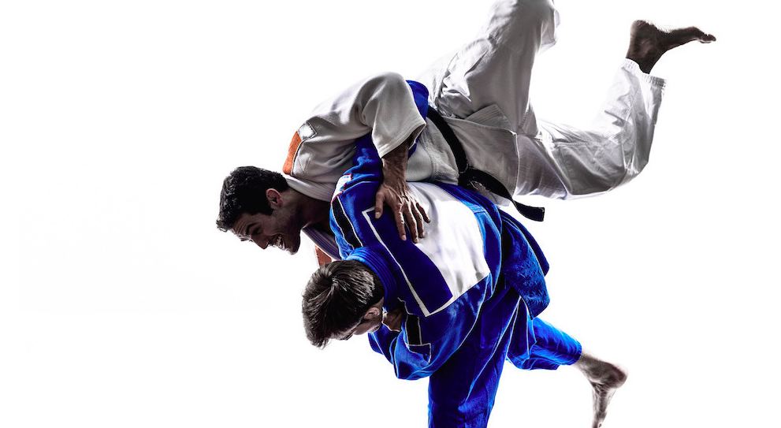

BRAZILIAN JIU JITSU
As Carlos Gracie once said,
"There is no losing in Jiu Jitsu. You either win or you learn."
About Jiu Jitsu
Brazilian Jiu-Jitsu is a martial art and combat sport based on ground fighting and submission holds. It focuses on the skill of taking an opponent to the ground, controlling one's opponent, gaining a dominant position, and using a number of techniques to force them into submission via joint locks or chokeholds. Brazilian Jiu-Jitsu was first developed around 1920 by Brazilian brothers Carlos, Oswaldo, Gastão Jr., George, and Hélio Gracie, after Carlos was taught traditional Kodokan judo by a travelling Japanese judoka, Mitsuyo Maeda, in 1917. Later they developed their own self-defense system named Gracie Jiu-Jitsu.